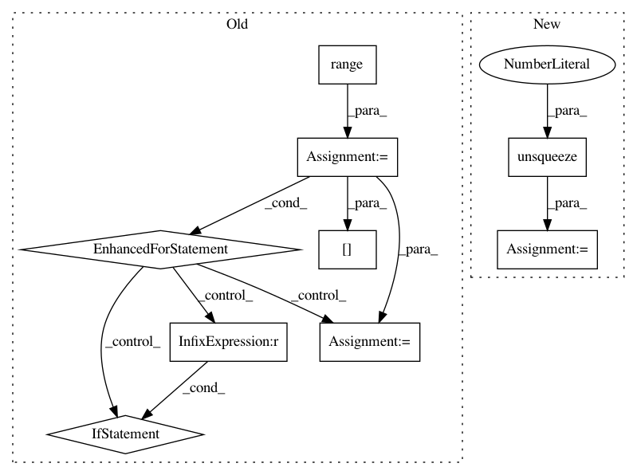

aa9592d811ad9765e06dd0e638e7cee9e5f4b00c,dnc/dnc.py,DNC,_layer_forward,#DNC#Any#Any#Any#Any#,170
Before Change
layer_input = input
hchx = []
for hlayer in range(self.num_hidden_layers):
h = self.rnns[layer][hlayer](layer_input, chx[hlayer])
layer_input = h[0] if self.rnn_type.lower() == "lstm" else h
hchx.append(h)
chx = hchx
// the interface vector
ξ = layer_input
After Change
(chx, mhx) = hx
// pass through the controller layer
input, chx = self.rnns[layer](input.unsqueeze(1), chx)
input = input.squeeze(1)
// the interface vector
ξ = input
In pattern: SUPERPATTERN
Frequency: 3
Non-data size: 9
Instances
Project Name: ixaxaar/pytorch-dnc
Commit Name: aa9592d811ad9765e06dd0e638e7cee9e5f4b00c
Time: 2017-11-10
Author: root@ixaxaar.in
File Name: dnc/dnc.py
Class Name: DNC
Method Name: _layer_forward
Project Name: OpenNMT/OpenNMT-py
Commit Name: ba164c0dbb3d8171004380956a88431f4e8248ba
Time: 2017-08-01
Author: bpeters@coli.uni-saarland.de
File Name: onmt/Models.py
Class Name: Embeddings
Method Name: make_positional_encodings
Project Name: ixaxaar/pytorch-dnc
Commit Name: 51caa2e2cebe2e6e8c06ffbb918448dd2db011a7
Time: 2017-11-10
Author: root@ixaxaar.in
File Name: dnc/dnc.py
Class Name: DNC
Method Name: _layer_forward